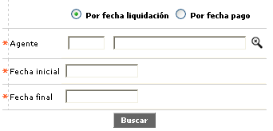
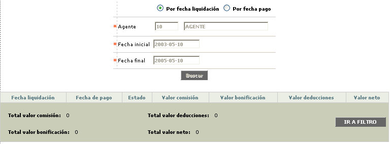

Consulta de Estadísticas
Todas las tareas realizadas por los funcionarios promotores pueden ser consultadas a través de esta función con base en un rango de tiempo determinado.
El formulario permite filtrar tanto por Fecha de liquidación como por Fecha de pago, y exige los tres siguientes campos para realizar la búsqueda.

Luego de realizar el filtro a través de los tres campos obligatorio, el sistema muestra la información de acuerdo a los dato que exisstan en las tablas.

Fecha liquidación |
Permite seleccionar la fecha del rango dado para realizar la consulta corresponde a la fecha de liquidación. |
Fecha pago |
Permite seleccionar la fecha del rango dado para realizar la consulta corresponde a la fecha de pago. |
Estado |
Este campo muestra cómo se encuentra la liquidación del funcionario promotor, esto es, si ha sido pagada o simplemente generada. |
Valor comisión |
Campo en el cual se consulta el monto devengado por concepto de comisiones por las tareas realizadas. |
Valor bonificación |
En este campo se ingresa como criterio de consulta el monto devengado por concepto de bonificaciones por cumplimiento de metas mediante las tareas realizadas. |
Valor deducciones |
Campo que muestra el monto a deducir de acuerdo con los conceptos parametrizados, aplicables a cada promotor, que se descuentan de sus valores devengados. |
Valor neto |
Registra el monto efectivo pagado o abonado al agente promotor o la empresa externa para la que labora. |